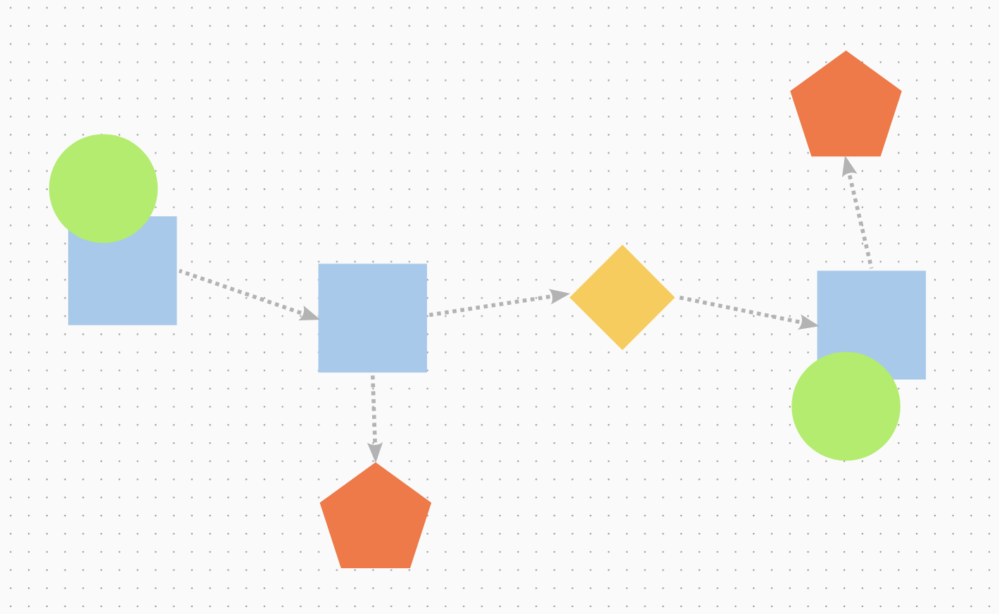

Develop: Brainstorm and Journey Map
Now that you have a How Might We question, it's time to brainstorm some ideas to try to solve for the question. Generating ideas by yourself can be fairly difficult if you are new to this process. Even experienced designers benefit from working in groups because typically the array of ideas generated in a discussion is far larger than when working alone. For this step, you will partner up with small groups to brainstorm ideas for each person's project.
After you complete the brainstorm, you will work individually on developing a journey map to explore one of the ideas from the brainstorm. You will start to design the experience at a high level, almost like developing the plot to a movie. You do not need to have every detail of the experience and actions figured out in the journey map, but it should explain the idea from the brainstorm at a high level.
A journey map should include the following components
- A critical pathway of core moments/events
- Feelings and thoughts that might be important to note about the events
- What decisions are made that lead to the events
- Any opportunities to capture outcomes through media production (reading, writing, video, drawing, photos, sculptures, etc.)

Tools
- Sign up for Mural.co as a part of the Penn State Mural group, link in Canvas.
- Mural.co Template: After you have created an account and logged in, click on "create mural from this template."
Time
30 - 60 minutes
Instructions
- In Step 1 on the Mural template, complete the brainstorming exercise with two or three other people. If you are not in the same room, please email the links to each other's Mural. Each person will have their own Mural with their own HMW question selected. Organize ideas into the play and reflection categories. Spend 15 minutes for each person's How Might We question so that every person in the group has their own Mural template and brainstormed ideas.
- You will complete the journey map in step 2 by yourself. First write down core moment(s) of engagement in the squares. For example: "I realized the grass was too long." Try to identify as many as you can. Consider what the most critical aspects of what the experience might be, and what the person is thinking and feeling at the moment, marked with circles.
Post work
- Export and download the Mural as a PDF and then upload that PDF to Canvas.
Citation
Adapted from: http://www.designkit.org/methods/63